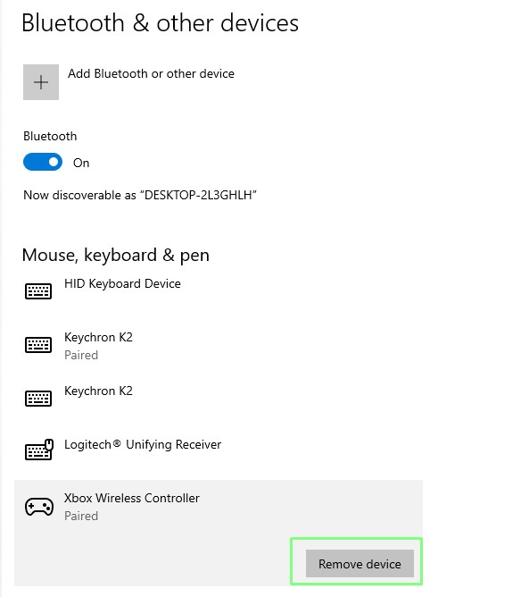

Bluetooth Not Working
3 Remove and pair again.
In Bluetooth & devices, select the accessory and choose Remove device. Put it back in pairing mode and add it again.

What to check:
- Keep the accessory nearby during pairing.
- Choose the correct device name.
- Approve the pairing request on both devices if prompted.